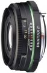

器材库 > APS画幅镜头 > SMC DA 21/3.2 AL Limited

详细规格
镜头类型
广角镜头
发布日期
2006-05-23
焦距
21mm
等效35mm画幅焦距
32mm
最大光圈
f/3.2
最小光圈
f/22
视角（对角）
22
镜头结构
8片/5组
非球面镜片
1片
最近对焦距离
20cm
最大放大倍率
0.17
滤镜口径
49mm
镜头卡口
Pentax AF
防抖
否
颜色
黑色
尺寸
63×25mm
重量
155g
carter19772015-04-02 14:144.58 分
操作性 5.00耐用性 5.00性价比 4.00解像力 4.00色彩还原 4.50机械结构 5.00
sanqiumuzi2013-10-20 17:554.33 分
操作性 5.00耐用性 4.00性价比 4.00解像力 4.50色彩还原 4.50机械结构 4.00
UVfilter2012-10-19 19:484 分
操作性 4.00耐用性 5.00性价比 3.50解像力 3.00色彩还原 4.50机械结构 4.00
古月晧兮2012-03-14 20:524.75 分
操作性 5.00耐用性 5.00性价比 4.50解像力 4.50色彩还原 4.50机械结构 5.00
longhuantall2012-02-16 13:003.92 分
操作性 4.50耐用性 4.50性价比 3.00解像力 3.00色彩还原 4.00机械结构 4.50
dysunnyclub2011-11-23 13:584.42 分
操作性 5.00耐用性 5.00性价比 4.50解像力 4.00色彩还原 3.50机械结构 4.50
修己安人2011-06-09 23:343.83 分
操作性 4.00耐用性 4.00性价比 3.50解像力 3.50色彩还原 4.00机械结构 4.00
playboyroyal2011-03-23 00:334.83 分
操作性 5.00耐用性 5.00性价比 5.00解像力 4.00色彩还原 5.00机械结构 5.00
mzm12242010-02-18 21:454.67 分
操作性 5.00耐用性 4.50性价比 4.50解像力 4.00色彩还原 5.00机械结构 5.00
ZBCMH2009-11-23 18:265 分
操作性 5.00耐用性 5.00性价比 5.00解像力 5.00色彩还原 5.00机械结构 5.00
seem2009-09-18 11:294.75 分
操作性 4.50耐用性 4.50性价比 5.00解像力 4.50色彩还原 5.00机械结构 5.00
dijj2009-08-04 15:014.83 分
操作性 5.00耐用性 4.50性价比 4.50解像力 5.00色彩还原 5.00机械结构 5.00
arondes2009-07-23 20:074.75 分
操作性 5.00耐用性 5.00性价比 4.00解像力 4.50色彩还原 5.00机械结构 5.00
simplyred11072009-02-10 23:444.83 分
操作性 5.00耐用性 4.50性价比 5.00解像力 5.00色彩还原 5.00机械结构 4.50
royalhost2008-10-21 21:174.42 分
操作性 4.50耐用性 4.50性价比 4.00解像力 4.50色彩还原 4.00机械结构 5.00
ly05202008-07-25 10:214.67 分
操作性 4.50耐用性 5.00性价比 3.50解像力 5.00色彩还原 5.00机械结构 5.00
zxb11142008-03-12 04:454.75 分
操作性 5.00耐用性 5.00性价比 4.00解像力 4.50色彩还原 5.00机械结构 5.00
izx2008-02-16 16:254.83 分
操作性 5.00耐用性 4.50性价比 4.50解像力 5.00色彩还原 5.00机械结构 5.00
slownow2007-11-13 16:184.58 分
操作性 4.50耐用性 5.00性价比 4.00解像力 4.50色彩还原 4.50机械结构 5.00
terrencejiang2007-10-23 13:034.5 分
操作性 4.50耐用性 4.50性价比 4.00解像力 4.50色彩还原 5.00机械结构 4.50
吧喜妖果2007-02-17 14:594.58 分
操作性 4.50耐用性 4.50性价比 5.00解像力 4.50色彩还原 4.50机械结构 4.50
产品图 / 样片
外观图